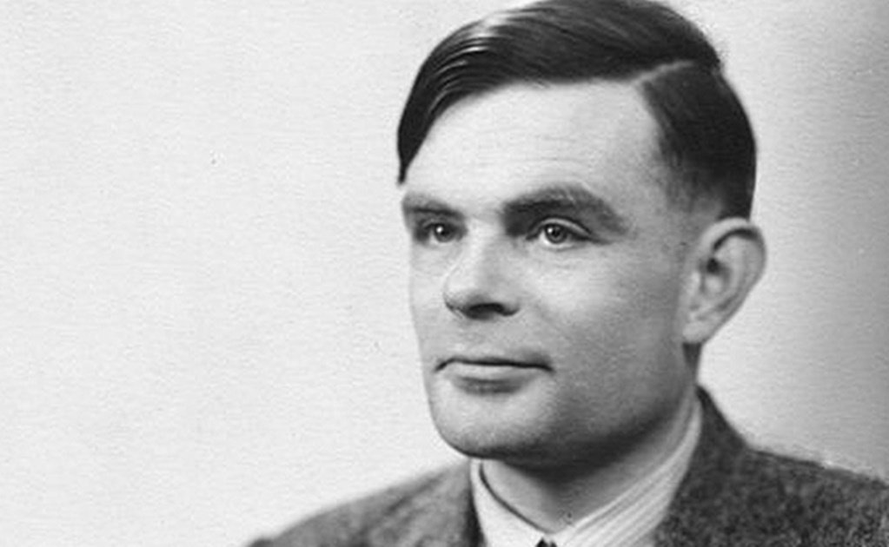

"Sometimes it is the people no one can imagine anything of who do the
things no one can imagine."
TIMELINE
1992 Alan Mathison Turing born in Maida Vale, London,
to Ethel Sara Turing (nee Stoney) and Julius Mathison Turing.
1938 Alan goes to Princeton University in America to
study mathematics and is awarded a PhD.
1940 With Gordon Welchman, Alan develops the Bombe to
decipher the messages sent by the Germans using their Enigma machine.
1952 Alan is arrested for gross indecency. He loses
his security clearance so he cannot work. He is offered chemical
treatment instead of going to prison. The treatment makes him very
unwell.